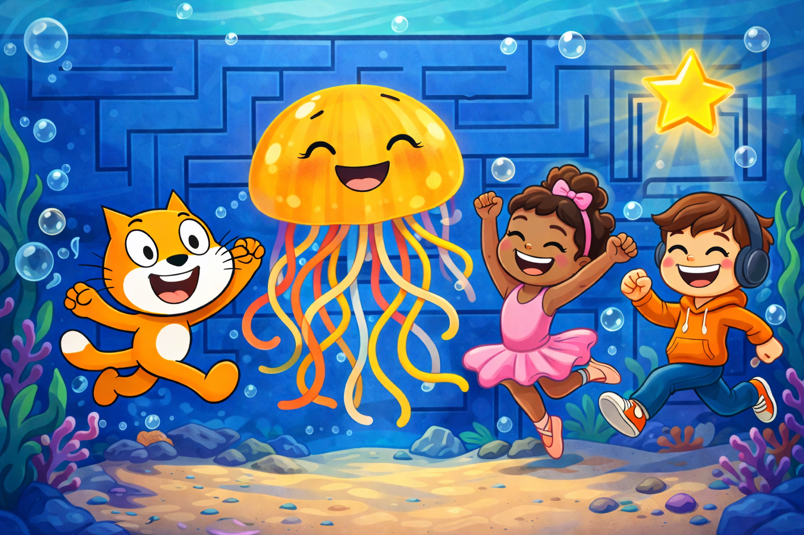

I have 2 labrador retrievers, Tikka and Winnie!
On Scratch I have learned to code in an interactive, visual and accessible way. Scratch is a great building block for me to improve and clean my programming skills. Scartch uses simple darg-and-drop block, which make it easier for me to grasp importnat concepts such as, loops, conditionals, variables, and event programming. By using these projects where I see my vision come to life and through games and animations I am able too see the immediate affects of my code. Scratch helped to make my learing more engaging and lessen my confusion. Using scratch encouraged me to problem solve and it helped to spark creativity through my designs. Overall, learning the basics of programming through scratch provided me with a strong foundation in coding logic and made the learning process enjoyable.

Dancing Through Mazes is a scratch game that I made for a KNES 381 project. This project was my first time expereincing scratch, I made a 3 level game starring a beautiful ballerina. This game introduced me to the basics of scratch and definitely caused me a lot of frustration. Overall, this game was the main structure that the rest of my games follow.
The name speaks for itself! As frustrating as the maze games are and I thought I would never make another, I made one! This game is a simple 1 level maze and works as a practice game for the harder ballet game. This game has no reward and its primary purpose is to get through the maze, restart and do it all again. Making this maze game came by easily and I hope to make another maze game with more levels soon!
With this game I took a different approach. I decided to try a different style of game using what I have learned from the previous 2 games. This game allowed for me to spark my creativity in terms of structure but still keep the general idea rather simple. This game is a super fun game to play if you are competitive, can you beat my highscore of 37?
I have 2 labrador retrievers, Tikka and Winnie!

I started dance at 5 years, quit to play hockey and started competing again when I was 13!

I am originally from Armstrong, BC, and moved to Calgary for University in 2024.